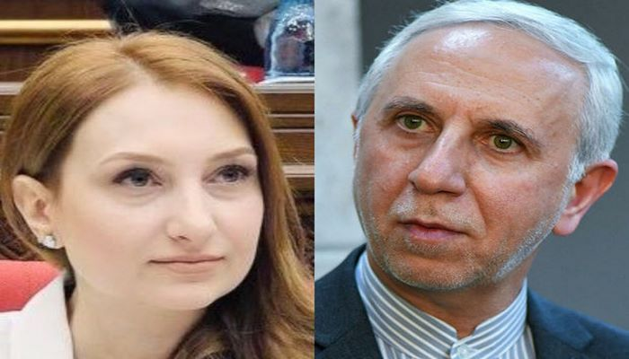

BMT Ermənistanın və erməni lobbisinin arzusunu gözündə qoydu
Avqustun 16-da BMT Təhlükəsizlik Şurasının Ermənistanın təşəbbüsü Laçın yolu ilə bağlı vəziyyəti müzakirə etmək üçün toplandı Nyu-Yorkda keçirilən iclasda Ermənistan və Azərbaycan nümayəndələrindən başqa ABŞ, Rusiya, Türkiyə, Böyük Britaniya, Çin, Yaponiya və digər ölkələrin nümayəndələri də çıxış ediblər. Erməni lobbisi və İrəvan Fransanın dəstəyi ilə çağırılan bu iclasın Azərbaycan əleyhinə qəbul ediləcək qətnamə ilə bitəcəyinə inanırdılar. Lakin bu baş vermədi. Deputat Cavid Osmanovun fikrincə, artıq bütün dünya Azərbaycanın haqlı və ədalətli olduğu görür. O əlavə edib ki, aparılan xarici siyasət nəticəsidir ki, Azərbaycan növbəti dəfə diplomatik qələbəsini qazandı. Deputat onu da əlavə edib ki, Azərbaycan beynəlxalq hüququn norma və prinsiplərinə uyğun addımlarını atacaqdır və Azərbaycanı haqqlı və ədalətli yolundan heç bir qüvvə yayındıra bilməz.

“Azərbaycan son üç ildə beynəlxalq aləmdə öz gücünü bir neçə dəfə sübut etmiş ölkədir”. Bunu isə siyasi şərhçi Yeganə Hacıyeva deyib. O əlavə edib ki, avqustun 16-da keçirilən iclasda nəinki Ermənistan və onun havadlarına, eləcə də erməni lobbisinə qalib gəldik. Qeyd edək ki, BMT-dəki Azərbaycanın daimi nümayəndəsi Yaşar Əliyev geniş məruzə ilə çıxış edərək Təhlükəsizlik Şurasının üzvlərini reallıqlarla ətraflı tanış etdi. İclasda humanitar məsələləri siyasiləşdirməməyə çağırış edildi. Bir daha dünya ictimaiyətinə çatdırıldı ki, Qarabağ regionundakı ermənilər Azərbaycanın suveren ərazilərindədirlər və onlar Bakının təklif etdiyi yollardan istifadə imkanları təmin olunmalıdır. Fuad Sadıqov APA